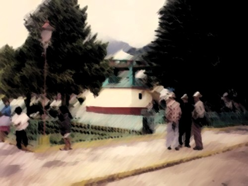

Chichiquila significa "lugar donde abunda la hierba amarga".
En 1522 el poblado de origen náhuatl fue sometido por los españoles y por ser un paso notorio, pronto fue dado en encomienda.
Todavía hasta mediados del siglo XIX pertenecía al Distrito de Chalchicomula de Sesma y en 1895 se convierte en municipio libre.Fundado por nahuas en la época precortesiana, fue sometido entre 1521 y 1522, por los españoles. En las postrimerías del siglo XIX formó parte del antiguo distrito de Chalchicomula y en 1895 se constituyó en Municipio Libre. La cabecera municipal es el pueblo de Chichiquila.
En 1522 el poblado de origen náhuatl fue sometido por los españoles y por ser un paso notorio, pronto fue dado en encomienda.
Todavía hasta mediados del siglo XIX pertenecía al Distrito de Chalchicomula de Sesma y en 1895 se convierte en municipio libre.
Chichiquila, Puebla, tiene una rica historia que se remonta a la época prehispánica. Fue fundado por los nahuas, un grupo indígena que habitaba la región antes de la llegada de los españoles1. En 1522, durante la conquista, Chichiquila fue sometido por los españoles y pronto se convirtió en un importante paso y fue dado en encomienda2.
Durante el siglo XVI, la evangelización de la región comenzó con la llegada del presbítero Pedro Beltrán, quien inició la construcción de templos y la conversión de los habitantes locales1. En las postrimerías del siglo XIX, Chichiquila formó parte del antiguo distrito de Chalchicomula y en 1895 se constituyó como municipio libre3.
El nombre "Chichiquila" proviene del náhuatl y significa "lugar donde abunda la hierba amarga"2. Este municipio ha mantenido su herencia cultural a lo largo de los siglos, y hoy en día es conocido por su hermoso paisaje montañoso y su rica historia.